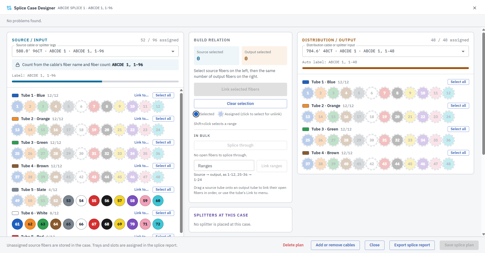
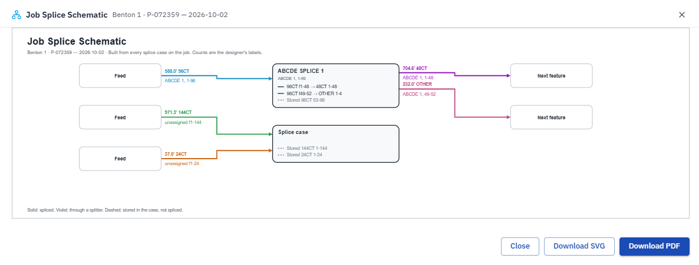
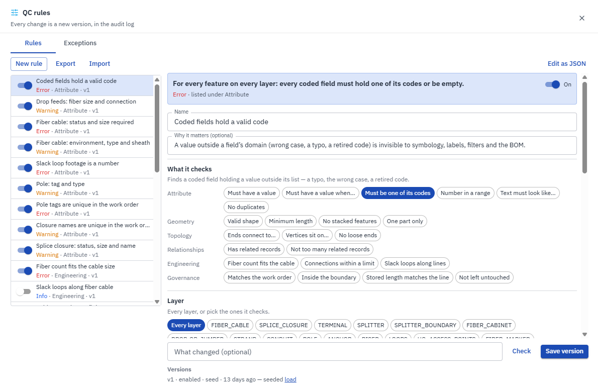

Case study · Design · CAD/GIS
In productionCanvas: Network Design Surface
One browser-based design tool in place of several, generating the bill of materials, splice diagrams and traces from the drawn network.
Internal application · shown through screenshots, capabilities and metrics only

// The problem
Every hand-off was a chance to drift
Fiber design work moved between AutoCAD, ArcGIS Pro, Katapult, spreadsheets and separate QC checklists. A designer re-drew reference geometry from CAD, a reviewer marked up a PDF, and someone built the bill of materials, splice diagrams and fiber traces by hand. Every hand-off was a chance for the design and the GIS record to drift apart.
// Engineering challenges
CAD and GIS in one place
DWG, DXF, GeoPackage, File Geodatabase, DBF, KML and Katapult jobs on one map, in the right CRS.
Desktop-grade editing
Snapping, vertex editing, transforms, copy-parallel and dimensioning behind an undo stack.
Outputs from geometry
BOM, splice diagrams and traces come straight from the drawn design, so they always match it.
Credentials stay server-side
Browsers never see portal credentials, yet layers, BOM and offline replicas all need tokens.
// Architecture
Browser (React + ArcGIS Maps SDK for JS)
design canvas · editing engine (command stack) · QC tools · labels · print · redlines
│ /api (same origin)
▼
API service (single container)
design sessions, imports, BOM, splice diagrams, traces, QC, redlines
fiber design layers, web map catalog
core SSO, role-based access, logging, rate limits
adapters ArcGIS token broker · Katapult · project-management system · offline replica
│ │
▼ ▼
PostgreSQL 16 + PostGIS ArcGIS Enterprise
(migrations at boot) web maps · design feature service · redline service
▲
GDAL + LibreDWG (file ingest, CRS detection and reprojection)
// Capabilities
- One design surface. Import, draw, check, label, print and submit without leaving the app.
- Automated network outputs. Bill of materials with configurable cost rates, splice diagrams and fiber traces, generated from the design. Review is the only manual step.
- QC suite. Automated checks run before review and catch issues a manual QC pass missed.
- Review redlines. Points, lines and areas with severity and a comment thread. An open Blocker disables Submit and Approve.
- Import pipeline. CAD and GIS files converted with GDAL and LibreDWG, CRS detected and reprojected, stored in PostGIS.
- Token broker. The server holds portal credentials and hands out scoped tokens.
- Operations. One Docker image serves the app and API; migrations run on startup; CI on every push.
// Screenshots



// Measured impact